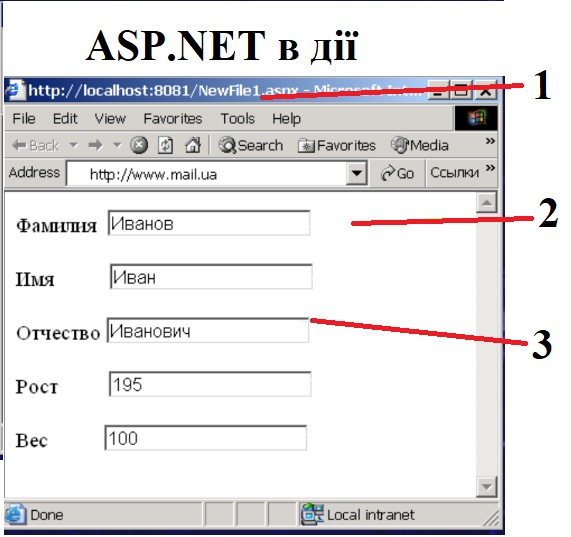

1. ASP.NET це
це платформа вебдодатків від Microsoft , яку можна використовувати для розробки динамічних веб- сайтів , вебдодатків і вебслужб.
це платформа від Microsoft для створення ігор
це вебсайт
це вебдодаток
2. Веб-сторінки ASP.NET
це платформа для створення динамічних веб-сторінок
це платформа з відкритим вихідним кодом, яка реалізує техніку WebHooks і базується на ASP.NET Web API.
це синтаксис мови програмування C# і Visual Basic .NET, який використовується під час створення вебсторінок
це платформа вебдодатків, яку можна використовувати для розробки динамічних вебсайтів
3. ASP.NET WebHooks
це платформа для створення динамічних вебсторінок
це платформа з відкритим вихідним кодом, яка реалізує техніку WebHooks і базується на ASP.NET Web API.
це синтаксис мови програмування C# і Visual Basic .NET, який використовується під час створення веб-сторінок
це платформа вебдодатків, яку можна використовувати для розробки динамічних вебсайтів
4. Razor
це платформа з відкритим вихідним кодом, яка реалізує техніку WebHooks і базується на ASP.NET Web API.
це платформа для створення динамічних вебсторінок
це платформа вебдодатків, яку можна використовувати для розробки динамічних вебсайтів
це синтаксис мови програмування C# і Visual Basic .NET, який використовується під час створення веб-сторінок
5. Під числом 1 зображено :

згенерована на запит сторінка
дані
форма
Web-браузер
6. Під числом 2 зображено :
згенерована на запит сторінка
дані
Web-браузер
форма
7. ASP.NET бере свою назву від
згенерована на запит сторінка
Web-браузер
форма
дані
8. Найбільш часто використовуваною директивою є
<%@ Assembly %>
<% @ Reference %>
<%@ PreviousPageType %>
<%@ Page %>
9. Скільки директив @ Page можна включити у файл .aspx
чотири
три
дві
одну
10. У якому році перша версія ASP.NET прийшла на зміну застарілому ASP (Active Server Pages)
2004
1999
2005
2002